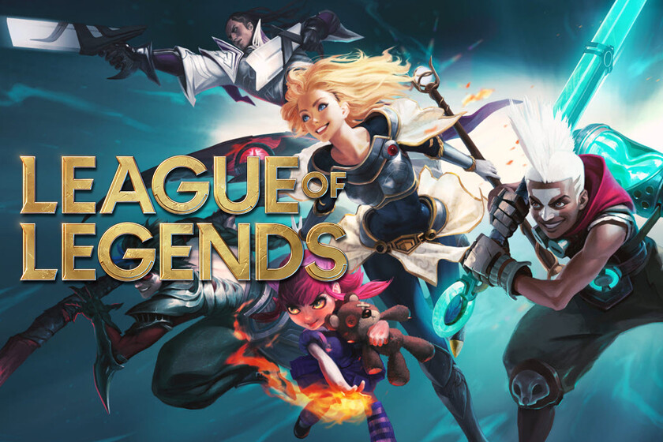

Bienvenido a mi sitio web
Aficiones
Algunas de mis aficiones son:
Jugar videojuegos, me apasiona ya que me permite ser competitivo con otros jugadores y pasar un
rato de diversión con mis amigos
Algunos de los videojuegos que más juego son:
League of Legends: Un juego de 5 vs 5 donde el objetivo es destruir el nexo enemigo
Valorant: Un juego de 5 vs 5 donde el objetivo es defender un punto de los enemigos

Minecraft: Un mundo abierto supervivencia

Otra afición que tengo es leer manga
Leer manga es algo que me a atraido los ultimos 2 años, que me ayuda a distraerme un poco y llevarme
a otros
mundos por medio de increibles historias
para escapar de mi triste realidad
Boku no Hero Academia:
La historia tiene lugar en un mundo donde el 80% de la población ha desarrollado «dones»,
surgiendo así
héroes y villanos. Entre el 20% de personas
sin dones, se encuentra Izuku Midoriya, cuyo mayor deseo es poder estudiar en la U.A. y
convertirse en un
héroe como su ídolo All Might.
Solo leveling:
En un mundo en el que ciertos humanos poseen habilidades mágicas, llamados cazadores, deben
luchar contra
monstruos para proteger a la raza humana de una
aniquilación segura, un cazador muy débil llamado Sung Jinwoo se encuentra en una lucha en la
que solo puede
tratar de sobrevivir.
La vida despues de la muerte:
El Rey Grey tiene una fuerza, riqueza y prestigio incomparables en un mundo gobernado por la
habilidad marcial. Sin embargo, la soledad se mantiene muy por
detrás de aquellos con gran poder. Debajo del glamoroso exterior de un poderoso rey acecha el
caparazón del hombre, desprovisto de propósito y voluntad. Reencarnado
en un nuevo mundo lleno de magia y monstruos, el rey tiene una segunda oportunidad de revivir su
vida. Sin embargo, corregir su error pasado no será su único desafío.